Level 75 reference · Zenith rules
Why Warrior?

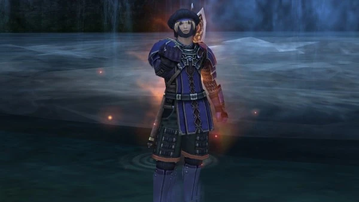
Warrior is an exceptionally strong DPS job and a very useful off tank, it has zero issues getting invites and slots easily into any melee friendly event in the game. On Eden specifically, Warrior takes advantage of the 2007 "Two Hander Buff" and uses a Great Axe as a primary weapon, discarding the dual wield style that was so prominent in early FFXI. As far as damage dealing job rankings go, Warrior is top 2 on Eden only really competing with Samurai for that top spot at 75. It is a job with a low barrier to entry - you can make a strong Warrior with only inexpensive auction house gear and a few pieces from Sky, but it also benefits from having a plethora of rare end game gear to chase should you choose to do so. The job is rewarding to master, requiring a decent amount of work, planning, and gear swaps to see good returns, because of its flexible accuracy requirements and reliance on critical hit weapon skills. The main downside to Warrior will be solo utility, of which it has almost none, but FFXI is meant to be a game where you team up anyways! If you want to be the one in the action, beating down the bad guys and commanding the battle pace, Warrior is the job for you.
Abilities and Traits
Mighty Strikes (1): Forces all hits to be Critical hits for 45 seconds, 2:00:00 recast.
An exceptional 2 hour ability for huge DPS burst. This will give you a 100% critical hit rate and also force all weapon skills to crit even if they normally cannot (i.e. Steel Cyclone or Kings Justice). This is a powerful zerging ability and can allow for some huge spike damage. A popular use would be to pair this with King's Justice, which makes it so every hit of the weaponskill can crit and outputs serious damage. It's not unlikely to hit 2500+ weaponskills with that pairing.
Provoke (5): Goads an enemy into attacking you, 0:30 recast.
This ability gives you an instant spike hate tool, awarding 1800 Volatile Enmity. Volatile Enmity is the fast decaying enmity, which means that Provoke is only really useful to gain snap hate on a mob and position it. This is not really a hate building ability, as you will generally lose that 1800 Volatile Enmity by the time the 30 second recast is back up.
Berserk (15): Attack+25% Defense-25% for 3:00, 5:00 recast.
An absolutely amazing offensive buff that every job envies. Don’t worry too much about the defensive downside, as your role should be damage dealing anyways.
Defender (25) Defense+25% Attack-25% for 3:00, 5:00 recast.
The inverse of Berserk. This is a situationally useful ability for times you may need to play defensively, but is not a common ability to use as a Warrior main.
Double Attack (25) Chance to hit twice 10% of the time.
Double Attack is one of the defining traits Warrior has, it starts at 10% and can be upgraded via merits to 15%. Double Attack greatly speeds up TP generation, white damage, and can proc two times on every multi hit weapon skill. Pair this up with a Fighter's Roll (which is boosted by having a Warrior in the party) and Warrior becomes a great axe swinging machine!
Warcry (35) Variable temporary Attack boost.
At 75, this ability is an AoE 9% attack boost to your party for 30 seconds every 5 minutes. Useful to use before weapon skilling to crank up that damage as well as other party members. This also has a large bonus hate component so can be used to get a mobs attention in a pinch.
Aggressor (45) Accuracy+25 Evasion-25 for 3:00, 5:00 recast.
Use this to increase your accuracy, either whenever it comes off cooldown or as a boost against select mobs. For example, it would be worth saving Aggressor in Dynamis until a Thief mob is pulled if you are accuracy capped on non Thief mobs. There is another way to use Aggressor for more advanced warriors. Since the Accuracy +25 might not be useful for you normally, you can swap in gear to lower your accuracy and raise other important stats while Aggressor is up, called an "Aggressor Swap". Generally this is very high level stuff, requiring some rare and niche gear that might take time to build up. Popular items to swap into with aggressor up would be Fortitude Torque, Bomb Core, Blitz Ring, and Merman's Earring.
Retaliation (60) Allows you to counterattack but reduces movement speed.
Retaliation when activated will give you a 3 minute duration, 3 minute recast buff, that gives you a 40% chance at capped accuracy to counterattack when hit. This counterattack functions differently than Monk, as it doesn't block the damage at all and it also grants TP from the counter hit. This will not proc on evades, shadows, parries, etc and the mob must be in front of you. The downside to this ability is a -12% movement speed debuff is applied to your character. This ability shines specifically in situations where you can go War/sam and just face tank mobs, giving you a massive raw increase in TP and swings just from how you'd be playing anyways.
Tomahawk (Merited) Lowers special damage resistances.
Tomahawk is a very unique, very situational ability. This ability will remove 25% of a mob’s special damage resistance. To explain: Slimes have a 50% resistance to slashing, Tomahawk would drop this to 25%. A practical use case for this ability is on Jailer of Temperance to bypass its changing weapon vulnerabilities.
Warrior’s Charge (Merited): Forces your next hit to Double Attack 15 Minute recast.
A long-cooldown damage increasing ability to use before a big weapon skill. Fully merited you can get this down to 5 minute recast to line up perfectly with Warcry allowing for some very nasty weapon skills every 5 minutes.
Merits

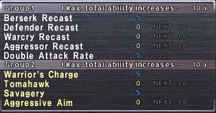
Category 1:
Berserk Recast: This is something you always merit, -50 seconds off Berserk when capped.
Aggressor Recast: This was popular in era when weapons like Ridill were better, but now a days is not worth meriting.
Double Attack Rate: This should be your second maxed merit, 5% free double attack is very powerful.
Advice: Putting 5 points into Berserk and 5 points into Double Attack is almost always your best scenario. Some people really like their Aggressor and Berserk timers lined up so they do some sort of split between the two for convenience sake. Double Attack has lesser value if you use a multi attack weapon like Ridill or Kraken Club, but those weapons are very niche and every warrior should still plan around Great Axe over those weapons.
Category 2:
Warriors Charge: This ability forces your next swing to double attack, including weapon skills. Fully merited you can get this down to 5 minutes and it feels great to use.
Tomahawk: Talked about in the abilities section, situationally useful, especially for Einherjar, Sea, and Limbus. Decent 1 point wonder investment.
Savagery: Gives +100 TP bonus per merit while Warcry is up, and half that to your party. This will benefit the Sams in your PT more than you but it is still very powerful for Raging Rush or Steel Cyclone.
Advice: 5/5 Savagery, 5/5 Warrior's Charge, 0/5 Tomahawk. Now that Einherjar is out, Tomahawk certainly is a stronger merit now. Many of the mob types or even boss types in Einherjar have reduced damage to certain weapon types, adding to your own damage and your alliances damage. I think Tomahawk is good merit but it still is very situational and I personally don't value it over the other two.
Meriting Priority Order:
Honestly everyone has a different opinion on this. I personally think it should look like:
Great Axe > Critical Hit > Double Attack > Berserk > Warrior’s Charge 1/5 > Savagery > STR > HP > WC 5/5.
I can see arguments for moving around Great Axe, Crit, DA, and Berserk though. Crit will benefit all jobs and even not 75 jobs so that can be a great first merit. Some people can’t even do Great Axe because it doesn’t fit into their combat skill merit plan. It’s situational but I thought I would at least say what I would do because I do get this question a lot.
Sub Jobs

Samurai is the highest damage sub job for Warrior and is going to be the sub you want to use in any situation you can get away with going full offense at 75. Hasso is the most important ability that Samurai sub adds which gives +10% job ability haste, +10 accuracy, and +5 strength at 75, job ability haste is something Warrior doesn't have access to outside of this and haste is the most important DPS stat in the game which makes this 100% uptime ability essentially unbeatable. Store TP+15 is a passive that this sub job gives, which when paired with Rajas Ring allows most great axes to gain enough TP to WS in 6 hits as opposed to 7 with other subs. Meditate is a 3 minute cooldown that grants 600 TP over 15 seconds, this is a nice little TP boost if used in combat and can be used out of combat in order to generate TP before a battle starts. Third Eye allows you to absorb 1 physical attack or non AoE WS on a 1 minute cooldown. Seigan upgrades your Third Eye, lowering its recast to 30 seconds and allowing it to absorb multiple hits before wearing off. Seigan is a strong defensive cooldown that allows War/sam to still be relatively tanky while not quite on the level of War/nin. Seigan and Hasso are alternate abilities so you cannot have both up at the same time, which makes it important to know when to play defensive and when to play offensive.

Ninja is the king of defensive sub jobs, it offers essentially zero offensive ability but is still one of if not the most used sub job by a Warrior just for the safety of it. Utsusemi: Ichi and Utsusemi: Ni are what Ninja sub is built around, these are casted buff spells that put 3 "shadows" on your character which entirely negate the next 3 melee attacks, single target spells, or WSes. Against a multi hit WS, Utsusemi will absorb up to as many hits as shadows it has, so if you get hit by a 4 hit Quadrastrike and have 3 shadows up, only 1 hit of the WS will do damage to you. AoE magic like Sleepga or Thundaga will go through Utsusemi and remove it, some WSes will go through it entirely and some will go through and remove it, it just depends on the WS. Overall Utsusemi can make you mitigate almost all incoming damage which is hugely beneficial against certain mobs. The other thing Ninja sub grants is Dual Wield, allowing you to use two 1 handed weapons at once, this is a fun gimmick ability for swinging around Axes and Swords but is generally a pretty bad option over just using a Great Axe.

Thief is a legacy sub job that was used extensively back in 2005 era FFXI but has largely lost its meta relevance on Eden. Sneak Attack is the main strength of Thief sub, this ability forces your next hit (including WSes) to automatically critical hit and always land the hit when used behind the mob. When paired with single hit WSes that usually couldn't critical hit like Steel Cyclone, this ability allows for some serious burst damage, especially against higher level targets that don't take much damage. Trick Attack allows you to transfer all the hate of the next hit onto the person in front of you, which is useful for planting bursts of hate onto a tank. Overall while this sub sounds great, the damage output compared to a sub like Samurai is laughable and a lot of Eden strategies actually revolve around using the Warrior as a tank so you can't even hit from behind
There are other sub jobs for specifically leveling like Ranger, Dragoon, Monk, and Corsair, but adding every niche sub would make this guide really long so I will refrain.
Leveling Tips
- The general weapon path a Warrior should go through 1-75 is:
- Whatever 1-5
- Great Axe 5-51
- Polearm 51-60
- Great Axe 60-75
- Crossbow is your friend at lower levels, it is just too powerful to pass up. Even with the distance changes that Eden now has, a proper leveled crossbow with proper bolts is going to absolutely pump more DPS than just solo swinging your Great Axe now. I can't say for certain when the cutoff is to stop using Markmanship, but I think the safe point would be around the 50s is when it falls off.
- Polearm is very powerful when leveling due to the popular EXP party areas being mobs weak to piercing. Specifically in the 53-59 range you will be expected to use a Polearm against the piercing weak Lesser Colibri.
- Dual Wielding or using shields is not advised when leveling, it is worse than using a proper 2 handed weapon.
- Food is one of the most important factors in performance while leveling. Please use food in every party, even if it’s just cheap Meat Mithkabobs. This includes Colibri parties.
- Prioritize accuracy in your equipment slots, it is very unlikely you will be accuracy capped in EXP parties and it will be your #1 damage increasing stat. Key pieces of gear to make sure you farm up and equip are Sniper’s Rings, Life Belt, and Haubergeon.
- Use a parsing program such as Deeps, Scoreboard, Parse, or KParser to monitor your accuracy so you can adjust your Food, Buffs, or Gear when needed.
Weapon Skills
Raging Rush - This weapon skill is pretty interesting, it is generally going to be your default weapon skill, doing the most raw damage in the large majority of situations. Raging Rush is a "Critical hit varies with TP" weapon skill, which is the only type of weapon skill that can naturally critical hit. This is a difficult weapon skill to gear for, needing a proper balance of DEX, STR, Accuracy, and Attack, but will give you very high average returns when geared correctly, the gear sets section goes more in depth on these specific sets you want to aim for.
| |
King's Justice - This weapon skill is unlocked via Nyzul isle, it's a pretty good weapon skill but loses out in raw damage to Raging Rush in many situations, generally there are two situations King's Justice makes sense to use. The first situation is for building Light skill chains, this weapon skill pairs well with things like Dragoons using Drakesbane, Amano Sams, Bravura Warriors, and others to put out some very strong skill chain damage. The second use is under the effect of Mighty Strikes. This is by far our best weapon skill when Mighty Strikes is up and turns warrior into actually a zerging burst damage machine. I've hit in the 3000+ range before with this combination!
| |
Steel Cyclone - This weapon skill is unlocked via a quest that becomes available at level 71 called "The Weight of Your Limits". Overall I don't think this weapon skill has a place in the modern Eden warrior meta. In old FFXI era this weapon skill was used when War/thf for big Sneak Attack weapon skill bombs on mobs like Kirin or Tiamat, that is not a play style I've ever seen really done on Eden and it's very very weak compared to just using a properly buffed warrior DD using Raging Rush. It is Warriors main option for making Darkness skillchains, but it is also such a weak weapon skill I'm not sure I'd ever recommend doing it just for the skillchain damage.
| |
Metatron Torment - The Relic Weapon Skill, this thing is very powerful for its ability to do a whole lot of things at once. First of all, the damage on it is pretty good, it's not as good as Raging Rush but is still very powerful and will on average still out damage most competitor weapon skills. The true strength of Metatron is the defense down debuffing proc of -18.5% to the mobs defense, and the aftermath which gives you -20% damage taken. Past those two things, it also is exceptionally strong for building light skill chains and as a relic weapon allows you to build double lights. It's really just a weapon skill that has it all, and is very spammable in most situations with the only drawback being a small loss in personal damage.
|
Weapons

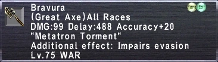
The end all be all Great Axe for Warrior. Massive base damage, Accuracy+20 and an evasion -15% proc to basically neutralize accuracy problems. Like all relics this will also occasionally hit for 2x damage on swing. The relic exclusive WS “Metatron Torment” can apply an 18.5% defense down effect on the mob that does not stack with other defense down effects. The aftermath of using Metatron Torment also gives you -20% damage taken. The only downside to this weapon is the Delay:488 makes 6 hitting harder, requiring additional STP gear slots. In general this is definitely a very powerful relic which adds a lot not only to your own damage output, but to the damage output of your entire alliance with its dual debuffing procs. This weapon also gives Warrior the ability to make Light Skillchains and Double Light Skillchains, pairing very nicely with things such as relic Samurai's or other Warrior's using King's Justice.

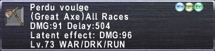
Perdu has finally landed on Eden after 7 long years and immediately cements itself on top. If you don't have a Bravura, this Great Axe is going to be a huge weapon in your hands. The latent effect is triggered under 1000 TP, so as long as you are WSing fast it is always up, and it even has a hidden effect of Attack+10 Accuracy+5 which really brings together some of the sets in this guides accuracy needs. I've been asked many times about Rune Chopper vs Perdu Voulge. All of the spreadsheeting I've done has shown that with 23%+ Gear Haste (Dusk Gloves +1 or Imperial Ring), Perdu Voulge does have the ability to beat Rune Chopper in DPS, but if you lack any Haste item at all, Rune Chopper still is a stronger Great Axe, just with a mandatory refresh condition.

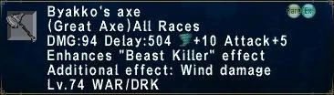
Byakko's is a very solid weapon and was the staple Great Axe on Eden for a long time. Perdu has dethroned it, with 2 higher base damage and 5 more Accuracy/Attack, but Byakko's is now a great starter option and will last you a very long time as you make the grind to high assault rank.

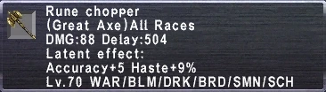
Latent Effect is triggered by draining 3MP/tic.
This is one of the strongest Great Axes in the game when you have the ability to get refresh. Haste is by far the most important stat you can get as a Warrior, and 9% in a single item is nearly unheard of, this affect is basically as strong as Apocalypse's aftermath which is one of the strongest in the game. If you're a new player, this gets you more haste faster. If you are well geared, you can now drop haste pieces in order to add in more Accuracy/Attack. In most situations when the latent is active, this is the best non-relic Great Axe. I recommend having your Rdms become accustomed to Refreshing Warriors, because this Great Axe is certainly worth it.

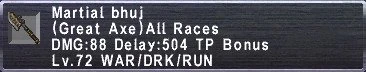
This weapon is a very strange Great Axe. Back in the day the primary use for Martial Bhuj was to beef up your Steel Cyclone's on HNMs as a War/thf, you'd gain TP on adds outside the battle and then sub in and drop a big WS. This game play style is largely gone from Eden, people know how to better use melee DPS on end game content or level jobs that work better than War/thf for that content. However, Martial Bhuj is actually a very good weapon just for general play, it sims about even with Byakko's Axe/Berserker's Axe for normal dynamis/meriting conditions, and is relatively cheap on Eden. It's not a bad weapon for you to carry around and use if Rune Chopper is not viable in the situation.

For most people that think Era Warrior, they think this weapon. Ridill is exceptionally hard to get, being a rare drop off a hotly contested 21-24 hour spawn HNM and an iconic weapon that everybody will want to fight you for. Ridill sadly has very little practical use in the era that Eden uses, Great Axe just became way too powerful with the 2h buff in late 2007 and now just makes Ridill largely obselete. The highest high for a Ridill warrior is going to be the lowest low for a Great Axe warrior, which means yes you can meme with a Ridill and win some parses but it's in my experience never the correct weapon to use.
Gear Sets
| Normal TP - https://www.ffxiah.com/item-sets/375280 | |||||||||||||||||||||||||||||||||||||||||||||||||||||||||||||||||||||||||||||||
|---|---|---|---|---|---|---|---|---|---|---|---|---|---|---|---|---|---|---|---|---|---|---|---|---|---|---|---|---|---|---|---|---|---|---|---|---|---|---|---|---|---|---|---|---|---|---|---|---|---|---|---|---|---|---|---|---|---|---|---|---|---|---|---|---|---|---|---|---|---|---|---|---|---|---|---|---|---|---|---|
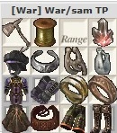 |
Stat Priorities: STP (Until 6 hit) > Haste (Until 25%) > Accuracy (Until Capped) > Attack > Strength.
This set has 404 Accuracy (Hasso, Hume DEX), this is enough accuracy for a large swath of 75 play but you may not be quite accuracy capped on things like Einherjar, Salvage, and certainly not HNMs. Peacock Charm is better than Fortitude Torque if you need the accuracy by a very small margin, but if you have to pick 1 neck to just TP in without fidgeting with small accuracy changes Fortitude is the way to go. I'd recommend making multiple accuracy sets, Dynamis requires almost zero accuracy in your gear, while Einherjar would benefit from a little more, play around with it to find what you need where. Unicorn Leggings aren't useful unless you have Ashitacast or Gearswap rules that equip and unequip them when they aren't active. | ||||||||||||||||||||||||||||||||||||||||||||||||||||||||||||||||||||||||||||||
| |||||||||||||||||||||||||||||||||||||||||||||||||||||||||||||||||||||||||||||||

| Rune Chopper TP - https://www.ffxiah.com/item-sets/372507 | |||||||||||||||||||||||||||||||||||||||||||||||||||||||||||||||||||||||||||||||||||||||||||||||||||
|---|---|---|---|---|---|---|---|---|---|---|---|---|---|---|---|---|---|---|---|---|---|---|---|---|---|---|---|---|---|---|---|---|---|---|---|---|---|---|---|---|---|---|---|---|---|---|---|---|---|---|---|---|---|---|---|---|---|---|---|---|---|---|---|---|---|---|---|---|---|---|---|---|---|---|---|---|---|---|---|---|---|---|---|---|---|---|---|---|---|---|---|---|---|---|---|---|---|---|---|
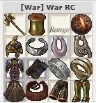 |
Stat Priorities: STP (Until 6 hit) > Haste (Until 25%) > Accuracy (Until Capped) > Attack > Strength.
This set has 410 Accuracy (Hasso, Hume DEX). Rune Chopper is the most flexible item in FFXI and because of that there's dozens of ways to build this set, which is hard to cover in a guide. The example set is aiming for high Attack and capped Accuracy. Some people stack large amounts of DEX and try to push high critical hit rates on specific mobs (for example 117 DEX gives you capped crit on Greater Colibri). There are Double Attack options in Legs and Feet that could be good in certain scenarios, but don't sim well for me. Because these sets are so contextual based on what gear you have access to and what mob you are fighting, it's hard to recommend any one specific set. I will try to include all the possible items in the alternative items tag. | ||||||||||||||||||||||||||||||||||||||||||||||||||||||||||||||||||||||||||||||||||||||||||||||||||
| |||||||||||||||||||||||||||||||||||||||||||||||||||||||||||||||||||||||||||||||||||||||||||||||||||

| Raging Rush - https://www.ffxiah.com/item-sets/372461 | |||||||||||||||||||||||||||||||||||||||||||||||||||||||||||||||||||||||||||||||||||||||||||||||||||
|---|---|---|---|---|---|---|---|---|---|---|---|---|---|---|---|---|---|---|---|---|---|---|---|---|---|---|---|---|---|---|---|---|---|---|---|---|---|---|---|---|---|---|---|---|---|---|---|---|---|---|---|---|---|---|---|---|---|---|---|---|---|---|---|---|---|---|---|---|---|---|---|---|---|---|---|---|---|---|---|---|---|---|---|---|---|---|---|---|---|---|---|---|---|---|---|---|---|---|---|
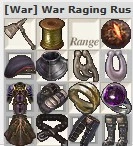 |
Stat Priorities: Accuracy (Until Capped) > DEX (Until 50 over mobs AGI) > STR > Attack.
This set has 410 Accuracy (Hasso, Hume DEX). This set is built around Greater Colibri as the target mob, given that it is one of the few applicable mobs we know the exact AGI of to target. I generally have had great results aiming my total DEX at around the 120~ mark, as you sacrifice very little STR for that but gain good crit rate on a huge swath of mobs in the game. This will need to be adjusted based on your race, mob, buffs, etc. Mithra should probably remove from DEX (Ring slot) and Elvaans should probably add some DEX (Earring, Possibly Legs) to hit their DEX goals. If you are fighting something with very high AGI, you may even just ignore DEX entirely. | ||||||||||||||||||||||||||||||||||||||||||||||||||||||||||||||||||||||||||||||||||||||||||||||||||
| |||||||||||||||||||||||||||||||||||||||||||||||||||||||||||||||||||||||||||||||||||||||||||||||||||

| King's Justice - https://www.ffxiah.com/item-sets/382971 | |||||||||||||||||||||||||||||||||||||||||||||||||||||||||||||||||||||||||||||||||||||||||||||||||||
|---|---|---|---|---|---|---|---|---|---|---|---|---|---|---|---|---|---|---|---|---|---|---|---|---|---|---|---|---|---|---|---|---|---|---|---|---|---|---|---|---|---|---|---|---|---|---|---|---|---|---|---|---|---|---|---|---|---|---|---|---|---|---|---|---|---|---|---|---|---|---|---|---|---|---|---|---|---|---|---|---|---|---|---|---|---|---|---|---|---|---|---|---|---|---|---|---|---|---|---|
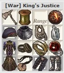 |
Stat Priorities: Accuracy (Until Capped) > DEX (Until 50 over mobs AGI) > STR > Attack.
This set has 404 Accuracy (Hasso, Hume DEX). King's Justice has a 50% STR modifier, making it beneficial to stack heavy amounts of STR, you also don't need DEX like Raging Rush does because it can't crit. If you have attack capped, swapping out some of the attack items (Heca+1 Legs and Bomb Core) for STR items (Hachiryu Haidate and Bomblet) is a sizable damage gain. | ||||||||||||||||||||||||||||||||||||||||||||||||||||||||||||||||||||||||||||||||||||||||||||||||||
| |||||||||||||||||||||||||||||||||||||||||||||||||||||||||||||||||||||||||||||||||||||||||||||||||||

| Steel Cyclone - https://www.ffxiah.com/item-sets/372462 | |||||||||||||||||||||||||||||||||||||||||||||||||||||||||||||||||||||||||||||||||||||||||||||||||||
|---|---|---|---|---|---|---|---|---|---|---|---|---|---|---|---|---|---|---|---|---|---|---|---|---|---|---|---|---|---|---|---|---|---|---|---|---|---|---|---|---|---|---|---|---|---|---|---|---|---|---|---|---|---|---|---|---|---|---|---|---|---|---|---|---|---|---|---|---|---|---|---|---|---|---|---|---|---|---|---|---|---|---|---|---|---|---|---|---|---|---|---|---|---|---|---|---|---|---|---|
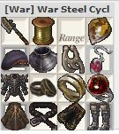 |
Stat Priorities: STR > VIT > Attack
The first hit of a weaponskill has +100 bonus accuracy, and Steel Cyclone only hits once so you don't need any accuracy in this set. Steel Cyclone also has a 50% attack boost attached to it, making attack not particularly useful as well. Stack STR and VIT! | ||||||||||||||||||||||||||||||||||||||||||||||||||||||||||||||||||||||||||||||||||||||||||||||||||
| |||||||||||||||||||||||||||||||||||||||||||||||||||||||||||||||||||||||||||||||||||||||||||||||||||

| PDT - https://www.ffxiah.com/item-sets/372463 | |||||||||||||||||||
|---|---|---|---|---|---|---|---|---|---|---|---|---|---|---|---|---|---|---|---|
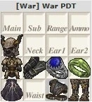 |
Stat Priorities: Damage Taken > Physical Damage Taken.
Equip this set when you are worried about survivability. Warrior has pretty bad defensive gear options compared to other jobs like Samurai, and you lose all offensive pressure while this set is equipped, so try not to spend too much time in this set. You could equip things in other slots like Evasion, Parrying, or HP but I just don't think it's worth it. Remember that Retalition is based on Accuracy, so dropping accuracy means way less countering. Three of these pieces have Slow+% on them, making them absolutely terrible for TPing in. If you spend a lot of time hanging out in your PDT set I would recommend using Darksteel +1 in those slots instead. The posted set is better suited for quick swaps to avoid 1 shot deaths from things like Eagle Eye Shot. | ||||||||||||||||||
| |||||||||||||||||||

| MDT - https://www.ffxiah.com/item-sets/372464 | |||||||||||||||||||||||||||||||
|---|---|---|---|---|---|---|---|---|---|---|---|---|---|---|---|---|---|---|---|---|---|---|---|---|---|---|---|---|---|---|---|
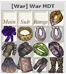 |
Stat Priorities: Damage Taken > Magic Damage Taken > Magic Defense Bonus > Elemental Resist
MDT caps at 50%, with Shellra V you need 23% in gear, with Shell IV you need 28%. I personally aim to have capped MDT and 1 of every elemental resistance because it opens up possible resist tiers that are not possible with 0 or negative resist. 1 MDB and 1 MDT are relatively equal in power, but MDT caps and MDB does not. | ||||||||||||||||||||||||||||||
| |||||||||||||||||||||||||||||||


|
Best in slot ring for TP sets in Salvage and Assaults. Can be fit into an Ashitacast or Gearswap to detect if you are in those zones. |
|---|---|

|
A very good Weaponskill earring at night, with double the amount of STR as a Triumph. |

|
This is a straight upgrade over Merman's Earring in the daytime. |
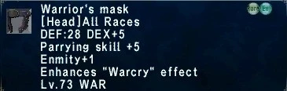 |
Macro in for longer Warcrys. |

|
This applies a poison effect when equipped which allows you to break out of sleep, absolutely amazing for events like Dynamis and Merits. |
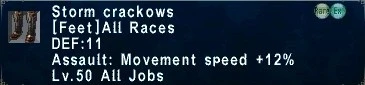 |
In Eden's era, Warrior doesn't get any form of Movement Speed enhancing items. Storm Crackows allows us to at least have it in assault. Remember that these items work in any instanced ToAU content, meaning they are very powerful for both Salvage and Nyzul Isle. |
| Regen items | Making an idle set to swap to these when out of combat is a great way to get passive HP back to keep you going. With a full set you can get 7HP/tic at low health, nothing to scoff at. |
| Engetsuto | Some events like Limbus and Sea you have mobs that are immune to Slashing, remember to carry around a Polearm for these. Leviathan's Couse is a better weapon than Engetsuto, but is much harder to get so use it if you got it. Remember that Joyeuse is also a piercing weapon if you need one in a pinch. |
| Horrent Mace | Same deal, you need blunt damage for Limbus and Sea sometimes. Things like Kraken Club or even a good Staff can fit this niche as well. |
| Medicines | A sign of a great player is an inventory full of medicines. Antidotes, Echo Drops, Eye Drops, Holy Water, Remedy, Panacea, Poison Potions, Icarus Wings, Reraisers, Potions, and Elixirs all can absolutely save your group when things go awry. You just have to remember to use them! |


Relic Sets
My most requested thing in the guide, guess it's finally time.
| Relic TP (Carbonara) - https://www.ffxiah.com/item-sets/401456 | |||||||||||||||||||||||||||||||||||||||||||||||||||||||||||||||||||||||||||||||||||||
|---|---|---|---|---|---|---|---|---|---|---|---|---|---|---|---|---|---|---|---|---|---|---|---|---|---|---|---|---|---|---|---|---|---|---|---|---|---|---|---|---|---|---|---|---|---|---|---|---|---|---|---|---|---|---|---|---|---|---|---|---|---|---|---|---|---|---|---|---|---|---|---|---|---|---|---|---|---|---|---|---|---|---|---|---|---|
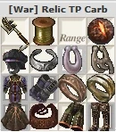 |
Stat Priorities: STP (Until 6 hit) > Haste (Until 25%) > Accuracy (Until Capped) > Attack > Strength.
410~ Accuracy. Bravura is faster than a traditional Gaxe and uses a single hit WS a lot, making it way harder to 6 hit with. This build uses the food Carbonara to get your bonus Store TP in order to maintain the 6 hit. Carbonara gives less attack than a traditional Yellow Curry or Coeurl Sub, but the stats you gain from using a better body piece usually help offset this. I think this set should be the default set, only changing to the Aurum Cuirass TP set when you plan to use Red Curry or want to cheap out with Meat Mithkabobs/no food. Tons of ways to add accuracy in this set if necessary. Unicorn Leggings aren't useful unless you have Ashitacast or Gearswap rules that equip and unequip them when they aren't active. | ||||||||||||||||||||||||||||||||||||||||||||||||||||||||||||||||||||||||||||||||||||
| |||||||||||||||||||||||||||||||||||||||||||||||||||||||||||||||||||||||||||||||||||||

| Relic TP (Aurum) - https://www.ffxiah.com/item-sets/401457 | |||||||||||||||||||||||||||||||||||||||||||||||||||||||||||||||||||||||||||||||||||||
|---|---|---|---|---|---|---|---|---|---|---|---|---|---|---|---|---|---|---|---|---|---|---|---|---|---|---|---|---|---|---|---|---|---|---|---|---|---|---|---|---|---|---|---|---|---|---|---|---|---|---|---|---|---|---|---|---|---|---|---|---|---|---|---|---|---|---|---|---|---|---|---|---|---|---|---|---|---|---|---|---|---|---|---|---|---|
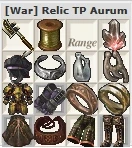 |
Stat Priorities: STP (Until 6 hit) > Haste (Until 25%) > Accuracy (Until Capped) > Attack > Strength.
400 Accuracy. This is the alternative to Carbonara, you need to use Aurum Body when you Metatron Torment to for it to be a real 6 hit. This set starts to run into accuracy issues the other set doesn't have, 400 accuracy can be a little low for stuff like Einherjar so watch out there. Losing Ebody for TP and Ares Body for WS really hurts and the Attack+ on better foods just does not make up for it, especially if you need accuracy. This set can do well with Red Curry, it's nearly +50 attack better than Carbonara+1 which is enough to counterbalance the body slot loss. Unicorn Leggings aren't useful unless you have Ashitacast or Gearswap rules that equip and unequip them when they aren't active. | ||||||||||||||||||||||||||||||||||||||||||||||||||||||||||||||||||||||||||||||||||||
| |||||||||||||||||||||||||||||||||||||||||||||||||||||||||||||||||||||||||||||||||||||

| Metatron Torment - https://www.ffxiah.com/item-sets/401458 | |||||||||||||||||||||||||||||||||||||||||||||||||||||||||||||||||||||||||||||||||||||
|---|---|---|---|---|---|---|---|---|---|---|---|---|---|---|---|---|---|---|---|---|---|---|---|---|---|---|---|---|---|---|---|---|---|---|---|---|---|---|---|---|---|---|---|---|---|---|---|---|---|---|---|---|---|---|---|---|---|---|---|---|---|---|---|---|---|---|---|---|---|---|---|---|---|---|---|---|---|---|---|---|---|---|---|---|---|
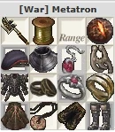 |
Stat Priorities: STR > Attack.
Generally speaking you just stack STR anywhere you can get it, the WS does love attack but you are already playing such a high attack job and in general the attack focused swaps like Merman's Earring, Swordbelt +1, etc don't do better than pure STR. | ||||||||||||||||||||||||||||||||||||||||||||||||||||||||||||||||||||||||||||||||||||
| |||||||||||||||||||||||||||||||||||||||||||||||||||||||||||||||||||||||||||||||||||||

| Bravura MDT - https://www.ffxiah.com/item-sets/401459 | |||||||||||||||||||||||||||||||||||||||||||||||||||||||||||||||||||||||
|---|---|---|---|---|---|---|---|---|---|---|---|---|---|---|---|---|---|---|---|---|---|---|---|---|---|---|---|---|---|---|---|---|---|---|---|---|---|---|---|---|---|---|---|---|---|---|---|---|---|---|---|---|---|---|---|---|---|---|---|---|---|---|---|---|---|---|---|---|---|---|---|
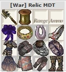 |
Stat Priorities: Damage Taken > Magic Damage Taken > Magic Defense Bonus > Elemental Resist
MDT caps at 50%, with Shellra V you need 23% in gear, with Shell IV you need 28%, Metatron Aftermath is 20%. With full Shell V and aftermath up you only need 7% MDT. This lets Bravura do some really silly shit with their MDT sets, you can equip all sorts of MDB and elemental resist and not really care about MDT. This set could be made many different ways, I don't even know if anyone even owns the ring on Eden. If you want to only use 1 MDT set I would recommend using more MDT (Rings, Earrings at least) for when aftermath might not be up. | ||||||||||||||||||||||||||||||||||||||||||||||||||||||||||||||||||||||
| |||||||||||||||||||||||||||||||||||||||||||||||||||||||||||||||||||||||

Looking Forward
Eden's getting pretty feature complete actually! Absolute Virtue could give us Ninurtas Sash (Replacing Speed Belt) and Mars's Ring (Replacing Toreador's Ring) when he is released. Pandemonium Warden would give us Hachiryu Haramaki which I doubt has any real relevance to War but maybe could see niche use. Lieutenant's Sash will come out at some point. We may even get our Mythic Weapon Conquerer which honestly as far as theorycraft goes could be pretty insane.
That's about it! Give me a shout in game on Falaras if you have any questions or would like to see anything added!
Adapted from Eden Wiki: Warrior Guide by Falaras · Contributors and history · CC BY-SA 4.0. Revision 46966. Layout, links and optional background text adapted for Zenith.